Ecología Humana
Conceptos Básicos para el Desarrollo Sustentable
Autor: Gerald G. Marten
Editorial: Earthscan Publications
Fecha de publicación: November 2001, 256 pp.
Edición en rústica: 1853837148
Edición en pasta dura: 185383713X
Capítulo 8 Servicios Ambientales
- Ciclos de Materia y Flujo de Energía
- Servicios Ambientales
- La Relación entre los Servicios Ambientales y la Intensidad de Uso
- La Falacia de Que la Oferta y la Demanda Protegen a los Recursos Naturales de la Sobreexplotación
- Puntos de Reflexión
Todos dependemos de los ecosistemas para obtener alimentos y demás recursos naturales que sostienen nuestras vidas. La mayoría de los recursos son renovables porque los ecosistemas los suministran de manera continua. Las personas utilizan los recursos y los devuelven al ecosistema como residuos en el drenaje, la basura o los efluentes industriales. Los ecosistemas renuevan los recursos procesando los residuos de tal modo que resulten de nuevo accesibles a la gente (véase la Figura 8.1). Para lograr esto, se requiere un suministro continuo de energía solar. La energía solar impulsa el movimiento cíclico de la materia a través del ecosistema, brindando a todos los animales, incluso al ser humano, un suministro de recursos naturales renovables y un depósito para sus residuos.
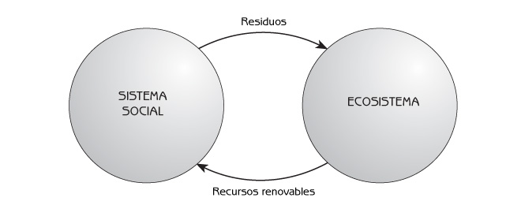
Figura 8.1 La utilización de recursos renovables por los humanos, y su retorno al ecosistema como residuos.
La provisión de recursos naturales renovables forma gran parte de los servicios ambientales. Estos servicios no dependen únicamente de la luz del sol, sino también de una comunidad biológica saludable que transporte la materia y la energía a los humanos de tal forma que puedan utilizarla. La habilidad de los ecosistemas para proporcionar estos servicios deriva de dos propiedades emergentes importantes: los ciclos de materia y el flujo de energía. Como veremos, la materia circula; pero la energía no lo hace, ya que sale del ecosistema al fluir por él.
Ante la explosión demográfica humana y el incremento de los niveles de consumo que implica el desarrollo económico, recientemente se han generado exigencias crecientes de estos servicios ambientales. Cuando las personas tratan de extraer demasiado de los ecosistemas (cuando sobreexplotan los servicios ambientales), obtienen cada vez menos al dañar la capacidad de los ecosistemas para proporcionar estos servicios. Si la población humana persiste en hacer demandas excesivas, el ecosistema puede cambiar al grado que los servicios desaparezcan por completo. La pérdida de servicios puede resultar irreversible. Como vimos al analizar la sobrepesca y la desertificación debida al sobrepastoreo en el Capítulo 6, la sobreexplotación puede alterar un ecosistema hacia un nuevo dominio de estabilidad de manera que el servicio no regresa, aún cuando se reduzca la demanda.
Ciclos de Materia y Flujo de Energía
Los ciclos de materia y el flujo de energía son propiedades emergentes de los ecosistemas que resultan de la producción y el consumo en los ecosistemas (véase la Figura 8.2).
Producción
Utilizando la energía del sol, la fotosíntesis forma cadenas de carbono a partir del dióxido de carbono para constituir los tejidos vivientes de las plantas. La producción biológica (también llamada producción primaria neta) es el crecimiento de las plantas. Además de proporcionar el material estructural para todos los organismos vivientes, las cadenas de carbono almacenan una gran cantidad de energía, que utilizan para el ‘trabajo’ metabólico.
Consumo
Los animales y los microorganismos se alimentan de plantas, o de otros animales y microorganismos, y utilizan las cadenas de carbono de sus alimentos como:
- Material de construcción para su propio crecimiento;
- Fuente de energía para las actividades metabólicas (procesos fisiológicos que los organismos vivientes utilizan para unir entre sí las cadenas de carbono y construir sus cuerpos).
Para obtener energía, las cadenas de carbono son rotas y liberadas a la atmósfera como dióxido de carbono. Este proceso se conoce como respiración.
Ciclos de materia
El movimiento de la materia a través de un ecosistema constituye los ciclos de materia, también llamados ciclos de minerales, o ciclos de nutrientes, ya que elementos como el nitrógeno, el fósforo y el potasio son minerales que nutren a las plantas. La materia se mueve a través de los ecosistemas en un ciclo de producción y consumo. Los elementos más importantes son carbono, oxígeno e hidrógeno, requeridos para la fotosíntesis, y nitrógeno, fósforo, azufre, calcio y magnesio, que se necesitan para la construcción de proteínas y otros compuestos estructurales de los cuerpos de los seres vivos. El crecimiento de las plantas también requiere potasio y algunos otros elementos en menor cantidad (hierro, cobre, boro, zinc, y manganeso, entre otros). Estos elementos se transfieren del suelo y el agua a las plantas verdes mientras crecen (esto es, durante la producción). Regresan al suelo y al agua cuando las cadenas de carbono se rompen durante el consumo.
Los animales y algunos microorganismos son consumidores. Las distintas especies juegan diferentes papeles ecológicos, como:
- Herbívoros (animales que se alimentan de plantas);
- Depredadores (animales que cazan y se alimentan de otros animales);
- Carroñeros y Detritívoros (animales que se alimentan de plantas o animales muertos);
- Parásitos (animales que viven sobre o dentro de hospederos animales o vegetales.);
- Patógenos (microorganismos que viven en o dentro de plantas o animales y les ocasionan enfermedades).
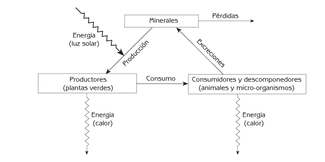
Figura 8.2 Ciclos de materiales y flujo de energía a través de un ecosistema.
Los consumidores utilizan las cadenas de carbono de sus alimentos como material de construcción para sus cuerpos. Cuando obtienen más nutrientes minerales de sus alimentos de los que requieren para sus cuerpos, los liberan al ambiente. Por ejemplo, el nitrógeno se excreta como amoniaco o urea. Los minerales regresan al suelo, donde sirven de nutrimentos para las plantas.
La mayoría de los microorganismos la constituyen los descomponedores, que consumen los cuerpos de las plantas, animales y otros microorganismos muertos para obtener los materiales de construcción de cadenas de carbono que necesitan para crecer. Liberan cualquier exceso de nutrientes minerales en sus alimentos al medio ambiente, quedando disponibles para las plantas. La función básica de los descomponedores en el ecosistema es similar en muchas formas a la de los consumidores.
Las leyes de la termodinámica
La energía se presenta en seis formas básicas:
- Radiante (luz solar, ondas de radio, rayos X, radiación infrarroja).
- Química (como las baterías, o las cadenas de carbono).
- Mecánica (el movimiento).
- Eléctrica (el movimiento de los electrones).
- Nuclear (la energía que se encuentra en los átomos).
- Calor (el movimiento de átomos y moléculas).
La primera ley de la termodinámica concierne a la conservación de la energía. Establece que la energía no puede ser creada ni destruida, pero se puede transformar de una forma en otra. Esto significa que siempre existe la misma cantidad de energía, antes y después de su transformación de una forma en otra.
La segunda ley de la termodinámica indica que siempre que la energía se transforma de una forma en otra, parte de ella se convierte en calor de bajo nivel. Esto quiere decir que la conversión de energía de una forma en otra nunca es 100 por ciento eficiente (véase la Figura 8.3). Parte de la energía se pierde en forma de calor. La energía ‘perdida’ aún es energía, pero ya no es la energía de alto nivel necesaria para generar trabajo, como mover objetos o impulsar los procesos metabólicos de plantas y animales.
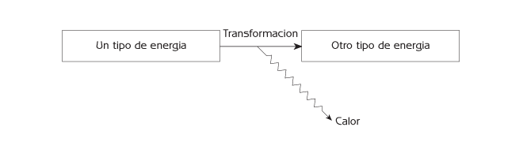
Figura 8.3 La segunda ley de la termodinámica: la conversión de energía en calor al transformarse un tipo de energía en otro.
Una consecuencia importante de la segunda ley de la termodinámica es que todos los sistemas del Universo, tanto físicos como biológicos, necesitan insumos de energía para continuar funcionando. El funcionamiento de los sistemas físicos y biológicos involucra muchas transformaciones de energía. Cada vez que la energía se transforma de una forma en otra al realizarse un ‘trabajo’ físico o metabólico, parte de ella se convierte en calor de bajo nivel, que ya no puede ser utilizado. En otras palabras, el sistema pierde energía útil (de alto nivel) a medida que la usa. Si no hay un insumo de energía a un sistema, toda su energía útil se pierde eventualmente como calor de bajo nivel, y al sistema no le queda energía útil de alto nivel para continuar funcionando. El principal insumo de energía para los ecosistemas es la luz solar. La comunidad biótica utiliza energía para realizar trabajo físico, como el movimiento de los animales y microorganismos, trabajo metabólico y otros trabajos que los ecosistemas requieren para continuar organizándose y funcionar adecuadamente (véase la Figura 8.4).
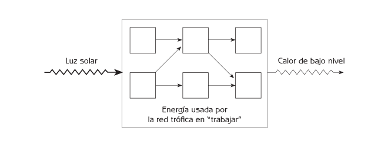
Figura 8.4 Flujo de energía a través de la red trófica de un ecosistema.
Una metáfora de los ciclos de materia y el flujo de energía en los ecosistemas
Un recipiente de agua sobre una estufa ilustra cómo se mueven la materia y la energía a través de un ecosistema (véase Figura 8.5). El fuego calienta el agua que se encuentra en el fondo del recipiente, haciéndolo pasar a un nivel más alto de energía (los objetos calientes tienen un nivel de energía más alto que los fríos). Debido a que el agua caliente es más ligera que la fría, sube hacia la superficie. Mientras el agua caliente se encuentra en la superficie, su temperatura disminuye, y se enfría a medida que la energía en forma de calor se traslada del agua caliente al aire más frío que se encuentra sobre ella. Después de perder calor, el agua (que ahora se encuentra más fría y más pesada) se hunde hacia el fondo del recipiente para sustituir al agua recién calentada que está subiendo. El resultado es una circulación de agua – un ciclo físico. El fuego es el insumo de energía al sistema, y la pérdida de calor del agua superficial es egreso de energía del sistema.
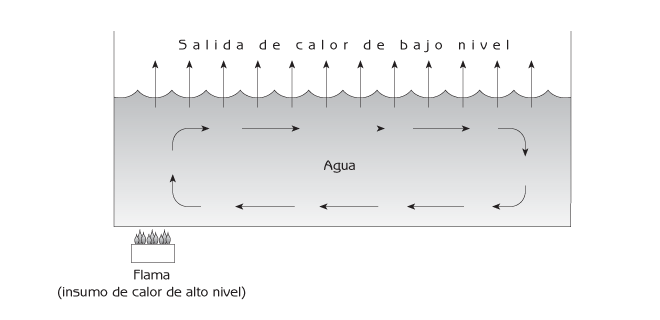
Figura 8.5 La cazuela de agua como metáfora del ciclo de materia y flujo de energía en un ecosistema.
Debido al insumo de energía (el fuego), el agua en el recipiente se auto-organiza. Hace su propia estructura (diferentes temperaturas en distintas partes del recipiente). El agua del recipiente forma un ciclo material, pero la energía no circula. La energía entra al recipiente desde el fuego, se mueve del fondo del recipiente hacia sus bordes con el agua caliente, y deja el recipiente como calor de bajo nivel. Esto se conoce como flujo de energía. Si el fuego (el insumo de energía) se apaga, el agua en el recipiente deja de circular, la energía deja de fluir, y el agua pierde su estructura auto-organizada.
Flujo de energía en los ecosistemas
Como en el caso del recipiente de agua, el movimiento de la materia por los ecosistemas es cíclico. La energía ingresa a los ecosistemas como luz solar (como el fuego que calienta el recipiente). La energía es capturada por la fotosíntesis en cadenas de carbono utilizadas por las plantas verdes para su crecimiento. Las cadenas de carbono se parecen al agua caliente del recipiente en tanto que contienen energía de un alto nivel. Las plantas rompen algunas de las cadenas de carbono de su cuerpo (a través de la respiración) para obtener la energía necesaria para su metabolismo, y parte de la energía se libera al medio ambiente como calor. Las plantas cuentan con las cadenas de carbono restantes (es decir, su fotosíntesis menos su respiración) para crecer. El crecimiento de todas las plantas en un ecosistema constituye su producción primaria neta. La producción primaria es la fuente de materia orgánica y energía (en forma de cadenas de carbono) de los ecosistemas.
Cuando los consumidores (animales y microorganismos) utilizan las cadenas de carbono de sus alimentos como material de construcción para sus cuerpos, rompen algunas de estas cadenas para liberar energía y cubrir sus requerimientos metabólicos. Esto es la respiración, y la energía generada se utiliza en movimientos – en primera instancia, en el movimiento y la reorganización de las moléculas necesarias para el crecimiento y las actividades metabólicas esenciales para la supervivencia; y en segunda, el movimiento del cuerpo entero. Una vez utilizada la energía proveniente de la respiración, parte de ella es liberada al medio ambiente en forma de calor. Cuando un consumidor se come a otro, hay un flujo de energía de alto nivel en forma de cadenas de carbono a lo largo de una cadena alimenticia que atraviesa la red trófica, y hay una pérdida de energía en forma de calor en cada paso del trabajo metabólico (respiración). El porcentaje de energía de una fase de la cadena alimenticia disponible para la próxima etapa se conoce como eficiencia de la cadena alimenticia. Se calcula como la cantidad de energía contenida en los alimentos menos la energía utilizada en la respiración. Usualmente es de 10 a 50 por ciento. La Figura 8.6 muestra el flujo de energía de una etapa de la cadena alimenticia a otra.
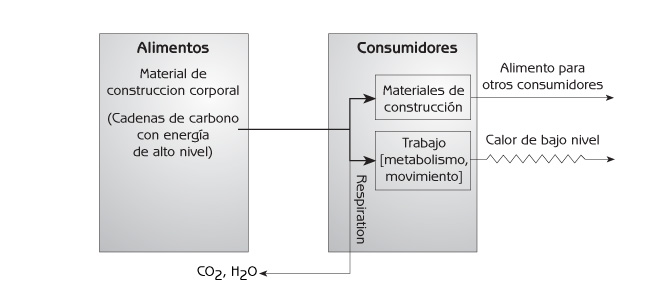
Figura 8.6 Flujo de energía de una etapa a otra en una cadena alimenticia.
A medida que pasan a través de la red trófica, las cadenas de carbono se van rompiendo poco a poco para liberar energía, hasta que desaparecen (véase la Figura 8.7). Cuando los consumidores espiran dióxido de carbono y agua, y excretan otros minerales, como nitrógeno, fósforo, potasio, magnesio y calcio, estos minerales se presentan como nutrientes para las plantas, exactamente en el mismo estado en que ingresaron a los sistemas biológicos la primera vez. Circulan de nuevo hacia las plantas. Los residuos de los consumidores son alimentos para los productores. La energía no se recicla hacia las plantas porque sale de los consumidores como calor de bajo nivel, que las plantas no pueden utilizar; las plantas solamente utilizan la luz solar. A escala global, la energía luminosa del Sol que llega a la Tierra se convierte eventualmente en calor de bajo nivel, y deja el planeta como radiación infrarroja (véase la Figura 8.8).
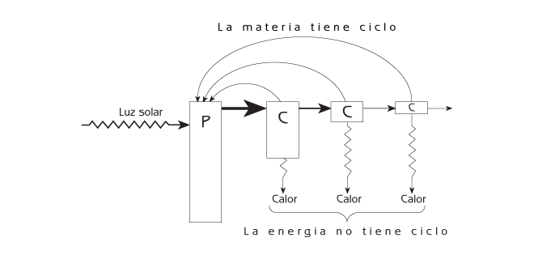
Figura 8.7 Flujo de energía a través de una cadena alimenticia. P = productores. C = consumidores.
En los ecosistemas agrícolas, el número de etapas en la cadena alimenticia que conduce al ser humano determina la eficiencia de la canalización de la producción primaria del sistema hacia la gente. Una cadena alimenticia más larga significa que habrá menos alimentos para la gente. La gente obtiene más alimentos de la misma superficie de tierra cuando consume plantas.
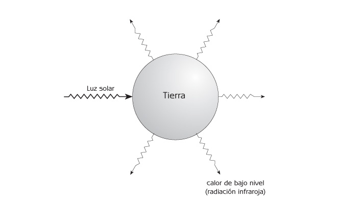
Figura 8.8 Ingresos y egresos de energía del planeta Tierra.
La luz solar es la única fuente significativa de insumo de energía para la mayoría de los ecosistemas, pero los insumos humanos de energía son importantes para los ecosistemas agrícolas y urbanos. Los insumos humanos de energía incluyen el trabajo humano, la tracción animal, los insumos mecanizados de energía, como los tractores y otros equipos de maquinaria, y el contenido energético de los materiales introducidos por los humanos a los ecosistemas. Los insumos humanos de energía no se integran al flujo biótico de energía como lo hace la luz. Los insumos humanos de energía se utilizan para organizar ecosistemas cambiando la comunidad biótica y añadiéndoles estructuras físicas antropogénicas. A su vez, esto afecta los flujos bióticos de energía y los ciclos de materia, cambiando la producción primaria y la red trófica. Con la agricultura moderna, la mayor parte de los insumos humanos de energía provienen de la energía petroquímica.
Servicios Ambientales
La Figura 8.9 muestra lo dependiente que es el ser humano del funcionamiento de otras partes del ecosistema. Los humanos somos consumidores – solamente una entre todas las especies de consumidores que hay en el ecosistema. Casi todo lo que la gente requiere para sobrevivir proviene de ciclos de materia y flujos de energía para dos servicios esenciales:
- El suministro de recursos renovables (plantas, animales y microorganismos como alimento; fibras de plantas y animales para el vestido; madera para la construcción; y agua).
- La absorción de contaminantes y residuos (consumo y descomposición de los residuos orgánicos por bacterias, absorción de nutrimentos minerales del agua por plantas acuáticas, y dilución de los materiales tóxicos en los ríos, océanos y atmósfera).
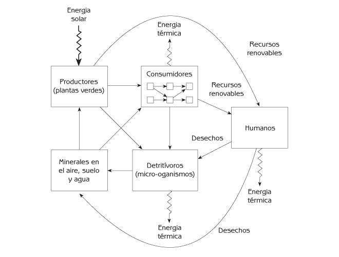
Figura 8.9 Los servicios ambientales como ciclos de materia en un ecosistema. Nota: Los consumidores son animales (herbívoros, depredadores, parásitos) y micro-organismos patógenos dentro de la red trófica.
La Relación entre los Servicios Ambientales y la Intensidad de Uso
Una importante propiedad emergente de los ecosistemas consiste en que los servicios ambientales decaen si se utilizan con una intensidad que daña la habilidad del ecosistema para proporcionarlos (véase la Figura 8.10).
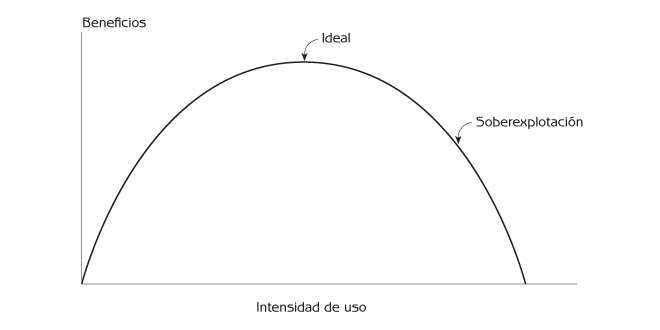
Figura 8.10 La relación entre servicios ambientales y la intensidad de su uso.
Utilizando las pesquerías como ejemplo, si el esfuerzo pesquero (el número de redes o anzuelos en el agua) en determinado ecosistema acuático es mínimo, un incremento en este esfuerzo conducirá a mayores capturas. Sin embargo, si el esfuerzo pesquero es mayor al óptimo, un incremento en la pesca conducirá a un menor volumen de captura. Esto se debe a que la población de peces se ve disminuida a tal grado que no quedan suficientes peces adultos como para producir un número adecuado de alevines para que la próxima generación de peces pueda sostener los mismos niveles de captura. La sobreexplotación ha disminuido el capital natural del ecosistema.
Lo mismo sucede con los bosques, las praderas, y la agricultura. En tanto que la tala no es frecuente, su incremento rinde un mayor volumen de madera; mientras no haya demasiados animales pastando en una pradera, una mayor cantidad de animales rendirá más carne y leche; y una agricultura más intensiva generará mayores rendimientos siempre que esta no haya sido ya antes demasiado intensiva. Pero si los árboles se talan con demasiada frecuencia, los bosques no serán capaces de madurar; en consecuencia, la cantidad de madera extraída pronto se vuelve insostenible. Si la pradera se apacienta con demasiada intensidad, los pastos serán menos abundantes. El suministro de alimentos para los herbívoros es reducido, y los rendimientos de producción (es decir, el crecimiento de los animales) son menores. El uso excesivo de fertilizantes o plaguicidas químicos para incrementar la productividad de los cultivos puede contaminar el suelo y reducir la producción. Las cantidades grandes de fertilizantes o plaguicidas pueden resultar tóxicas para las plantas; los plaguicidas también pueden matar a los animales y microorganismos edáficos que conservan la fertilidad de los suelos. La explotación recreativa de las áreas naturales puede dañar los ecosistemas originales y ejercer impactos sobre la belleza visual que originalmente fue el atractivo del sitio.
Una propiedad emergente de los ecosistemas: los servicios ambientales pueden desaparecer si la intensidad de uso es excesiva.
Esta propiedad emerge cuando una sucesión inducida por el hombre hace cambiar a un ecosistema de un dominio de estabilidad ‘funcional’ a uno ‘no funcional’ (véase la Figura 6.8). Un ejemplo es la sucesión de pesquerías, cuando los peces de valor comercial desaparecen por haber los pescadores enfocado sus esfuerzos sobre una especie determinada (ver Figura 6.7). El ecosistema cambia de uno que provee peces comercialmente valiosos en abundancia a otro que no lo hace. La desertificación debida al sobrepastoreo es otro ejemplo (ver Figura 6.6). La relación entre la intensidad de uso y los beneficios obtenidos puede cambiar de ser una como la que se muestra en la Figura 8.10 a otra como la ilustrada en la Figura 8.11.
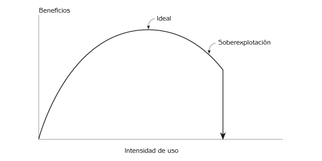
Figura 8.11 Desaparición de un servicio ambiental debido a la sobreexplotación.
Otro ejemplo es la intensificación de la producción de alimentos extendiendo ladera arriba técnicas agrícolas inadecuadas – una práctica común en el mundo en vías de desarrollo de hoy en día. Cuando se desarrollan cultivos año tras año en las laderas, la erosión puede acabar con todo el mantillo, dejando al suelo sin la capacidad para sostener más cultivos. De manera parecida, la intensificación inapropiada de la producción de alimentos mediante el riego puede hacer que la tierra deje de ser adecuada para ese propósito. El uso de riego en las regiones áridas donde el agua resulta insuficiente, puede resultar en una salinización que hace que el suelo resulte tóxico para los cultivos. Cuando el agua de riego se evapora, deja tras de sí minerales que pueden acumularse hasta alcanzar concentraciones tóxicas para los cultivos, a menos que la tierra se sature con agua adicional para lavarla de sales. En la ausencia de agua adicional, las sales se acumulan hasta que el rendimiento de las cosechas decrece al grado que la agricultura se vuelve improductiva. Grandes superficies de tierras semi-áridas del sur de Asia que se dedicaron a la agricultura durante la Revolución Verde de hace varias décadas, ahora son páramos debido a la salinización.
Sucede lo mismo con la absorción de residuos en los ríos, lagos, océanos y otros ecosistemas acuáticos. Arrojar demasiados residuos en un ecosistema acuático puede reducir su capacidad para absorberlos. Los ecosistemas absorben residuos orgánicos cuando, por ejemplo, los descomponedores, como las bacterias, los utilizan como alimento. Los descomponedores utilizan el oxígeno del agua para respirar, y liberan cadenas de carbono parcialmente rotas al agua, como subproductos de la descomposición. Incrementar la cantidad de residuos implica que habrá más respiración, y más subproductos. Si se arrojan demasiados residuos orgánicos al agua, los descomponedores utilizarán todo el oxígeno disuelto en ella, y los subproductos liberados por ellos alcanzarán concentraciones tóxicas. La calidad química del agua cambiará tanto que ni siquiera los descomponedores que consumen residuos podrán sobrevivir. Los descomponedores que consumen residuos serán sustituidos por otras especies de bacterias, que no purifican el agua, y la capacidad natural del ecosistema acuático para absorber residuos orgánicos se verá reducida.
Antes de la Revolución Industrial, cuando la población humana era relativamente pequeña y las exigencias sobre los servicios ambientales eran correspondientemente reducidas, el uso de los servicios ambientales se encontraba en la porción ‘ascendente’ de la curva que se muestra en la Figura 8.11. Actualmente, con la superpoblación y una maquinaria industrial masiva, de cobertura global, que consume grandes cantidades de recursos naturales, el uso humano de los servicios ambientales se encuentra cada vez más en la porción ‘descendiente’, de sobreexplotación, de la curva.
¿Cómo podemos saber cuál es la mejor intensidad de uso? ¿Cómo podemos saber si estamos sobreexplotando los servicios ambientales? Nuestro sistema social no ha podido desarrollar medios eficaces para responder a estas preguntas porque antes, cuando la población humana era menor y la gente no imponía demandas excesivas a los ecosistemas, la sobreexplotación no era un problema relevante. Una aproximación práctica para evitar la sobreexplotación consiste en incrementar la intensidad de la utilización de recursos en intervalos relativamente pequeños, vigilando cuidadosamente cómo cambian los beneficios obtenidos a medida que crece la intensidad de uso. Pueden evaluarse simultáneamente las partes relevantes del sistema social y el ecosistema, en busca de evidencias de consecuencias imprevistas. La intensidad de uso es la correcta si los beneficios aumentan cuando ésta aumenta (ver Figura 8.10). Una disminución de los beneficios obtenidos indica que existe una sobreexplotación.
Por simple que parezca en principio esta aproximación, su puesta en práctica no resulta nada sencilla. A veces, los procedimientos operativos para evaluar los servicios ambientales no son del todo evidentes. La recolección y sistematización de los datos puede resultar costosa, y los resultados pueden resultar poco concluyentes. Las actividades humanas incluyen tantas acciones distintas que afectan a los ecosistemas, y las respuestas de los ecosistemas pueden involucrar tantos servicios, que puede ser virtualmente imposible identificar causas y efectos específicos. Más aún, la respuesta de los servicios ambientales a los cambios en las actividades humanas puede tardar años o décadas, un marco de referencia temporal que frecuentemente no coincide con la velocidad de cambio de las actividades humanas. Cuando existen dudas acerca de la sobreexplotación, es prudente seguir el principio precautorio descrito en el Capítulo 10.
La Falacia de Que la Oferta y la Demanda Protegen a los Recursos Naturales de la Sobreexplotación
Algunas personas suponen que la mano invisible de la oferta y la demanda protege a los recursos renovables contra su sobreexplotación (ver Figura 8.12). Esta creencia se basa en la idea de que el uso excesivo de un recurso se evita mediante un incremento en su precio, cuando el recurso escasea. La protección proviene de un circuito de retroalimentación negativa. Por ejemplo, si se capturan demasiados peces, éstos escasean, su precio aumenta, hay una menor demanda de peces, se capturan menos, y la población de peces vuelve a aumentar.
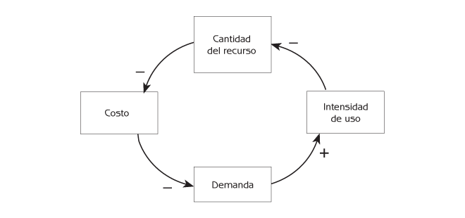
Figura 8.12 El control del uso de recursos por la oferta y la demanda. Nota: Las flechas negativas indican efectos negativos: si el abasto del recurso aumenta, disminuye el precio; si el abasto del recurso disminuye, aumenta el precio. Las flechas positivas indican efectos positivos: si aumenta la demanda, aumenta la intensidad de uso; si la demanda disminuye, disminuye la intensidad de uso.
El circuito de retroalimentación negativa de la oferta y la demanda es real, pero la creencia de que las fuerzas del mercado protegen a los recursos naturales de la sobreexplotación se basa en una visión simplista de los ecosistemas que ignora que las sucesiones inducidas por el hombre resultan irreversibles. Puede haber un cambio de un dominio de estabilidad a otro (ver Figura 6.6). Cuando los peces comercialmente valiosos son sustituidos por ‘peces chatarra’ debido a la sobrepesca, los peces valiosos pueden no volver, aún si la captura se suspende totalmente.
Los bosques aportan otro ejemplo. Si se cortan los árboles con demasiada frecuencia, la comunidad biótica puede cambiar de bosque a pastizal o a matorral. Si se tala una superficie muy grande de bosque, éste puede no regenerarse al no quedar semillas de árboles maduros para generar renuevos. Además, sin árboles que proporcionen hojarasca, el suelo puede perder la cubierta de hojas que lo protege contra la erosión, y ésta puede reducir la fertilidad del suelo al grado que la supervivencia de los árboles se hace imposible. Hay razones sociales además de ecológicas para explicar la pérdida del bosque después de la tala excesiva. Los mismos caminos que construyen las compañías madereras para extraer los árboles de los bosques del mundo en vías de desarrollo también pueden proporcionar acceso a las áreas recientemente deforestadas para que la gente hambrienta de tierras siembre cultivos de plantas. El bosque nunca se regenera si la gente continúa utilizando la tierra para la agricultura.
Puntos de Reflexión
- Haga una lista con los productos provenientes de plantas, animales y microorganismos más importantes que usted utiliza. Estos productos corresponden a las flechas que van de los productores, consumidores y descomponedores, a los seres humanos, tal como se muestra en la Figura 8.9. ¿De qué tipos de ecosistemas provienen los diferentes productos? ¿Dónde se encuentran estos ecosistemas? En el caso de los productos que provienen de animales y microorganismos, ¿cuántos eslabones tiene la cadena alimenticia que conduce a cada producto? ¿Qué productos u otros servicios significativos provienen de un ecosistema en conjunto?
- Piense en algunos recursos renovables importantes que consume directa o indirectamente. ¿Piensa usted que la intensidad de uso de esos recursos es óptima, en el sentido que se ilustra en la Figura 8.10? ¿Es menor, o mayor que la óptima? (esto es, ¿se encuentran sobreexplotados esos recursos?). En el caso de los recursos que parecen estar sobreexplotados, ¿cómo podría reducirse el uso? ¿Qué obstáculos significativos, de índole práctica o social, existen para reducir su uso? ¿La sobreexplotación ha conducido a cambios irreversibles en algunos de los recursos?
- Piense en algunos recursos no renovables. ¿Están siendo utilizados de tal forma que puedan durar por el tiempo que la gente los requiera? En el caso de los recursos que están siendo agotados rápidamente, ¿qué puede hacerse para reducir las tasas de consumo? ¿Qué obstáculos significativos existen para reducir el consumo?
- La gente hace demandas de los ecosistemas para obtener servicios que mejoren la calidad de su vida. Dado que la capacidad de los ecosistemas para satisfacer las necesidades humanas es limitada, necesitamos estar conscientes de lo que realmente queremos de la vida y lo que realmente necesitamos de los ecosistemas. Haga una lista de las cosas que resultan más importantes para su calidad de vida. ¿Qué proporción de su lista está compuesta por bienes de consumo? ¿Qué implicaciones tiene su lista para las demandas que se hacen a los ecosistemas?